Droplet Dynamics & Interfacial Gas Layers
Designed and manufactured a microdroplet platform to investigate whether dissolved air
accumulates at rising oil-water interfaces and produces measurable interfacial slip. The
platform combines stereolithography, precision flow control, simulation-informed flow
conditioning, high-speed imaging, and mechanistic modelling to resolve droplet motion
under controlled gas-saturation conditions.
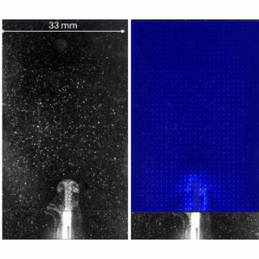
Precise Control of Rising Microdroplets
Designing and building purpose-specific experimental systems through an integrated
workflow of mechanical design, CAD, component selection, fabrication, assembly, and
electronic control. These systems combine custom SolidWorks components, manufactured
parts, sensors, cameras, and microcontroller-based hardware.
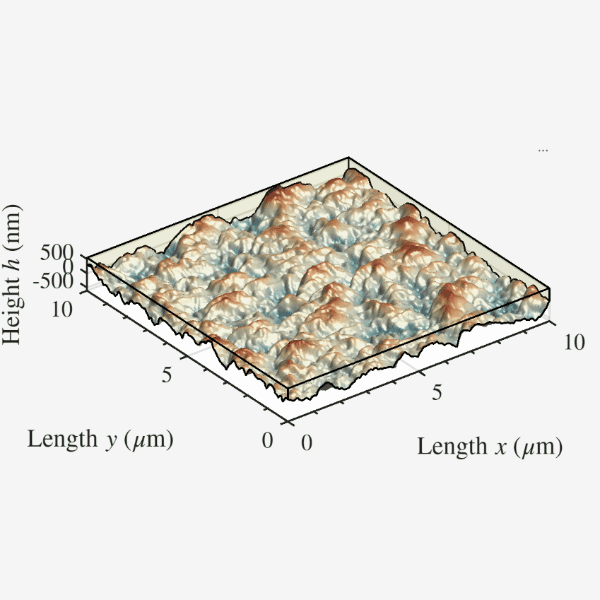
Functional Nano-Wrinkled Surfaces
Designing, fabricating, and characterising nano-wrinkled, superhydrophobic, and textured
surfaces for controlling wettability, gas retention, interfacial slip, and hydrodynamic
drag. This work connects manufacturing parameters and surface architecture with
measurable fluid-mechanical performance.
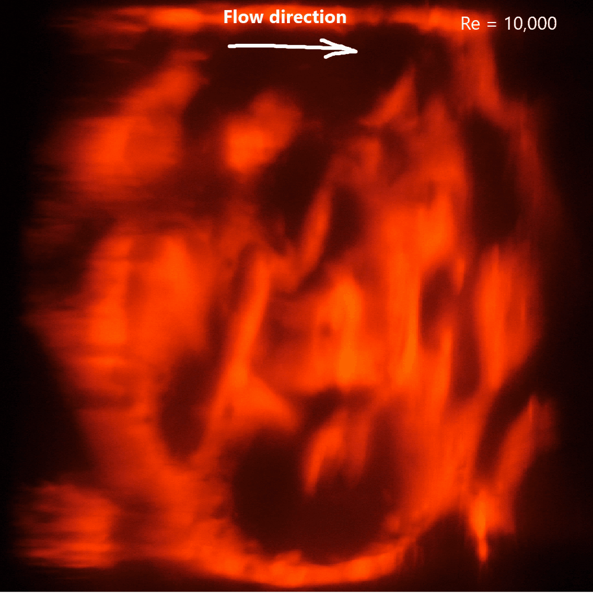
Optical Imaging of Lubricant Dynamics
Developed an optically accessible Taylor–Couette system to visualise how lubricant-infused surfaces degrade under sustained flow. Flush-mounted samples, refractive-index matching, and a fluid-filled viewing box enable clear, time-resolved imaging of lubricant redistribution and depletion under controlled shear.
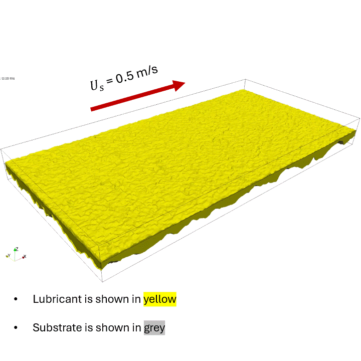
AFM-Resolved Two-Phase Flow Simulations
Developed geometry-resolved OpenFOAM simulations of lubricant-infused surfaces reconstructed from AFM measurements. The shear imposed by the external turbulent flow is applied to a laminar two-phase domain representing the viscous sublayer, resolving how the measured texture governs lubricant redistribution, retention and depletion.
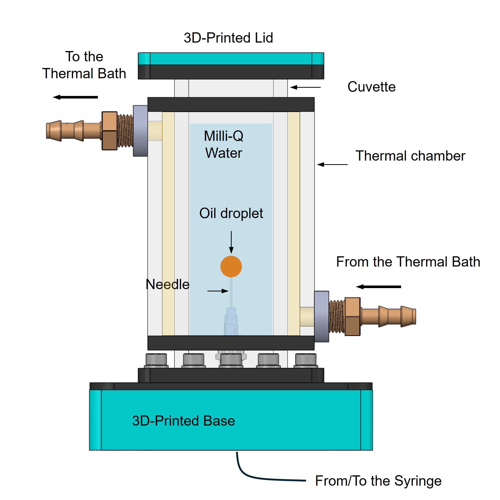
Custom Inverted-Drop Interfacial-Tension Cell
Designed and manufactured a temperature-controlled acrylic cell for measuring lubricant-water interfacial tension on an optical goniometer. The inverted configuration accommodates lubricants that rise in water, while controlled thermal conditions and optical access enable repeatable Young-Laplace analysis of droplet shape.
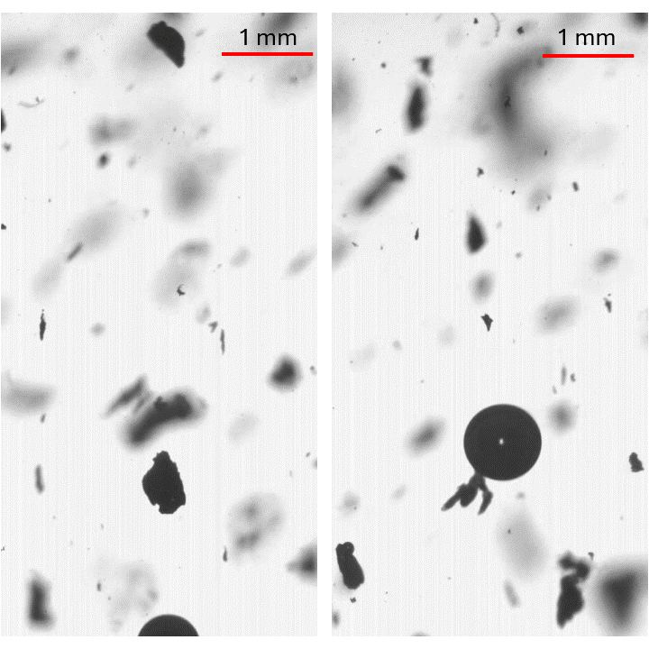
Microbubble-Assisted Microplastic Capture
Designed a microbubble platform to investigate how submillimetre air bubbles collide with, attach to, and transport microplastic particles in water. High-speed imaging captures individual bubble-particle interactions and quantifies how attached particles alter bubble trajectory and rise velocity, providing a mechanistic basis for improving flotation-based microplastic removal.

Viscoelastic Oil-Infused Surfaces
Proposed a new class of adaptive liquid-infused surfaces that combine engineered texture with lubricant rheology to improve drag-reduction performance and durability under sustained flow. The program integrates surface manufacturing, interfacial characterisation, multiphase modelling and controlled flow testing for sustainable maritime and fluid-transport applications.
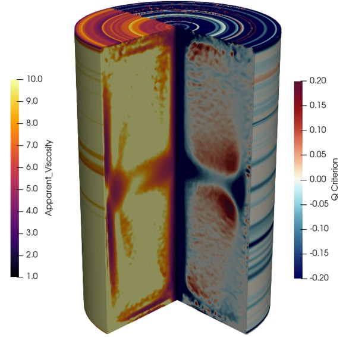
Shear-Thinning Flow in a Confined Taylor–Couette System
Developed a refractive-index-matched Taylor–Couette and PIV platform to investigate how shear-thinning polymer solutions reorganise confined rotating flows. High-resolution measurements and custom numerical reconstruction reveal how polymer concentration modifies coherent vortices, secondary-flow transport, and the spatial distribution of viscosity and turbulence.
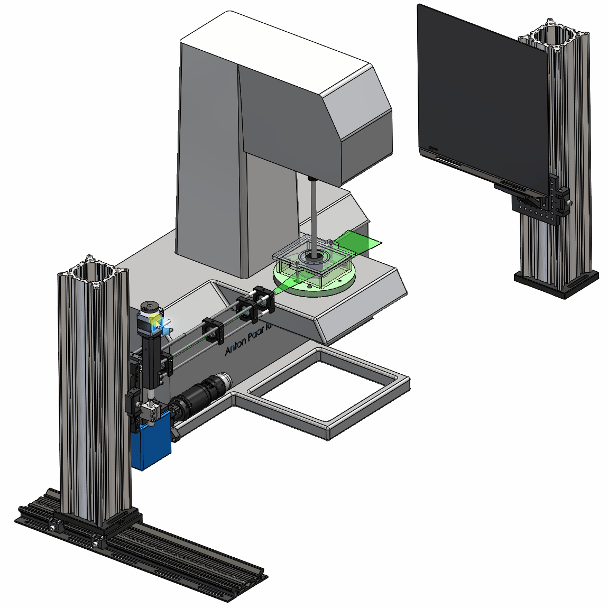
Automated Scanning PIV Platform
Developed an automated scanning particle image velocimetry system for spatially resolved measurements in Taylor-Couette and other confined flows. The camera and laser-sheet optics translate together on a precision motorised stage, preserving optical alignment while scanning parallel measurement planes. A 45° mirror provides access beneath the apparatus, while vibration isolation, wavelength-filtered imaging, and a laser-safe enclosure support accurate and repeatable measurements.
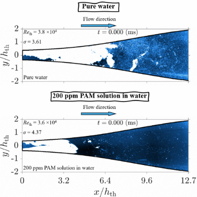
Taming Hydrodynamic Cavitation with Polymers
Designed a high-speed experimental platform to reveal how minute concentrations of flexible polymers transform destructive cavitation inside a converging-diverging nozzle. Imaging at 19,000 frames per second, high-frequency pressure sensing, rheology and spectral analysis showed that semidilute polymer solutions delay cavitation, soften cavity growth and collapse, and reduce the dominant shedding frequency..
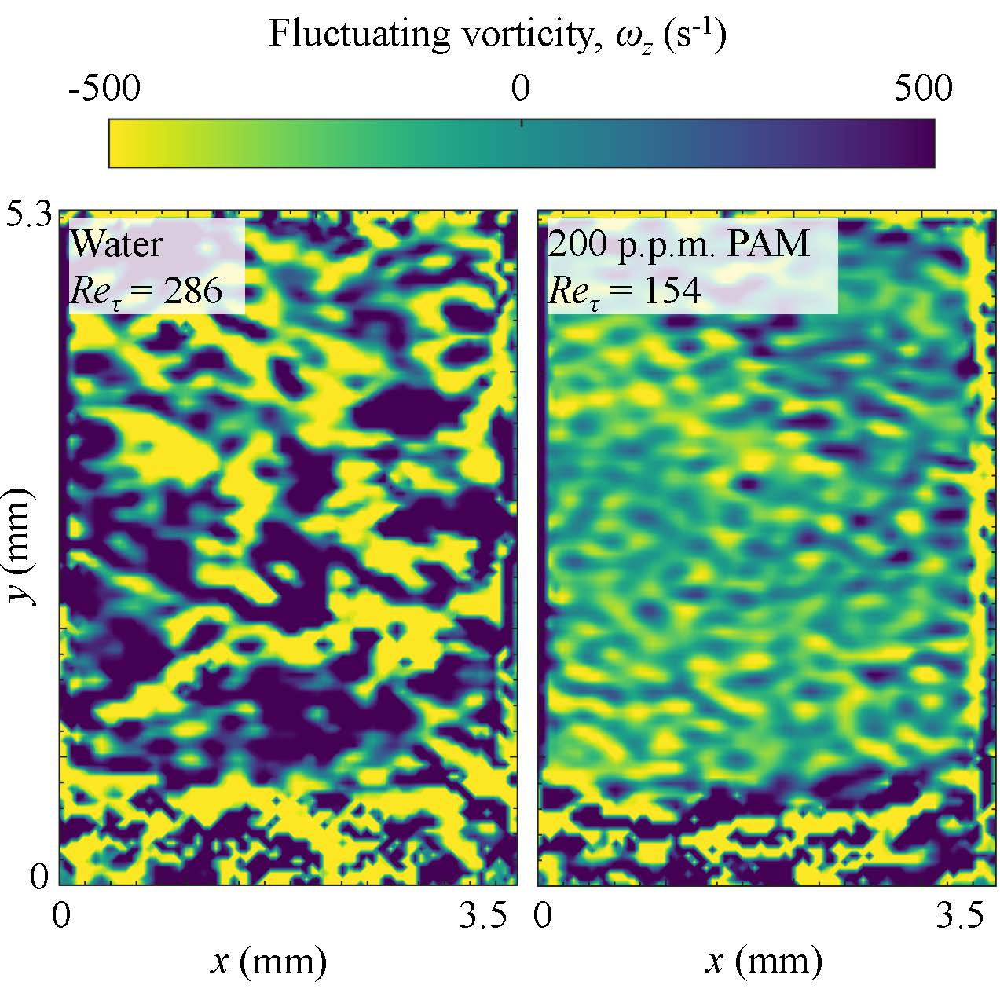
Turbulent Shear-Thinning Flow with Pressure-Gradient
Developed a high-resolution PIV platform to reveal how drag-reducing polymers reshape turbulent boundary layers under strong flow acceleration. Measurements over a replaceable, stereolithography-manufactured surface showed that polymer viscoelasticity and favourable pressure gradients jointly suppress momentum transfer, producing Reynolds shear-stress reductions of up to 89% and strongly relaminarised near-wall flows.
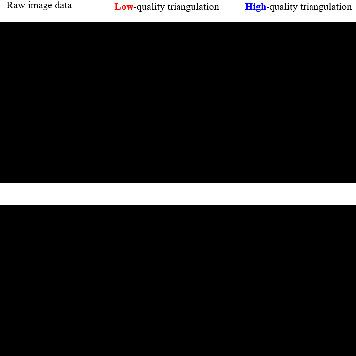
Resolving Flow at Moving Interfaces
Developed a dynamic tessellation method that converts scattered particle-tracking measurements into high-quality, interface-conforming flow fields. The approach preserves moving bubble boundaries, improves mesh quality, and extracts liquid velocities directly adjacent to deforming gas-liquid interfaces, including during breakup and recoalescence in confined channels.
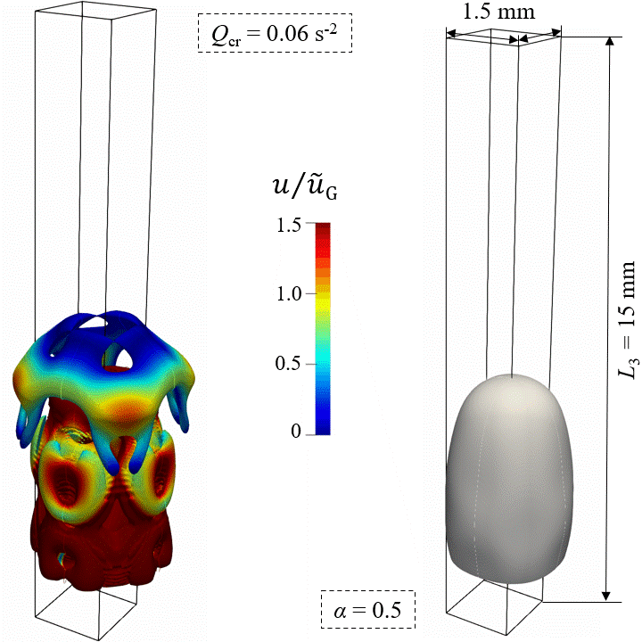
Hidden Flow Around Confined Slug Bubbles
Developed experimentally validated, three-dimensional CFD simulations to resolve the thin-film and corner flows surrounding slug bubbles in a square mini-channel. Adaptive interface refinement revealed local flow reversal, sharply different pressure dynamics in the films and corners, and interconnected vortex structures hidden from conventional planar measurements.
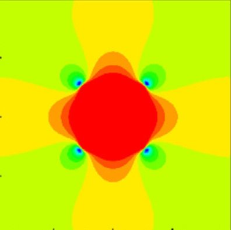
VOSET: Capturing Evolving Interfaces
Developed and validated a finite-volume two-phase flow solver incorporating a modified VOSET method. The geometrical coupling combines the mass conservation of volume-of-fluid tracking with the smoother curvature and surface-tension evaluation of level-set methods, accurately capturing bubble deformation, filament breakup and topology change.

Mapping Vertical Two-Phase Flow
Co-developed a multifunctional vertical air-water facility to investigate how tube diameter and downstream location influence gas-liquid flow regimes. High-speed imaging across 40 and 70 mm acrylic tubes showed that increasing diameter substantially reduces the stable slug-flow region and produces a distinct semi-annular regime.